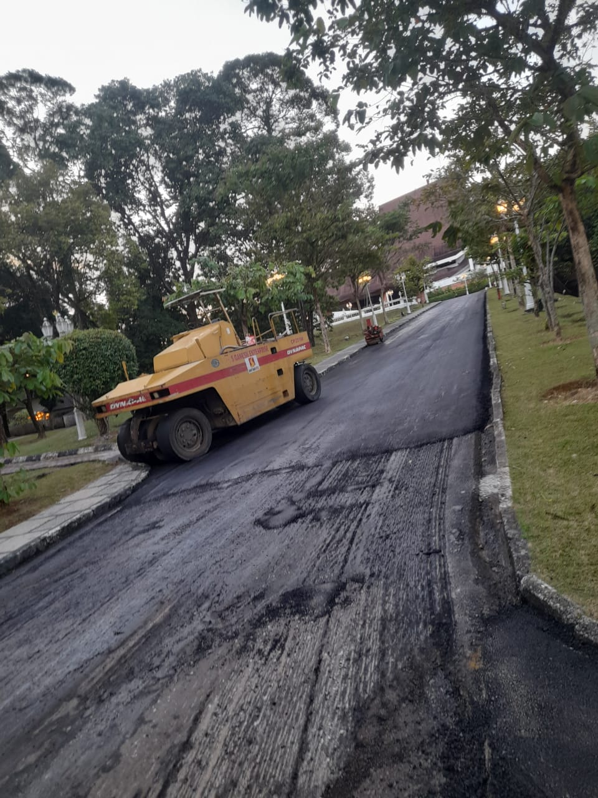
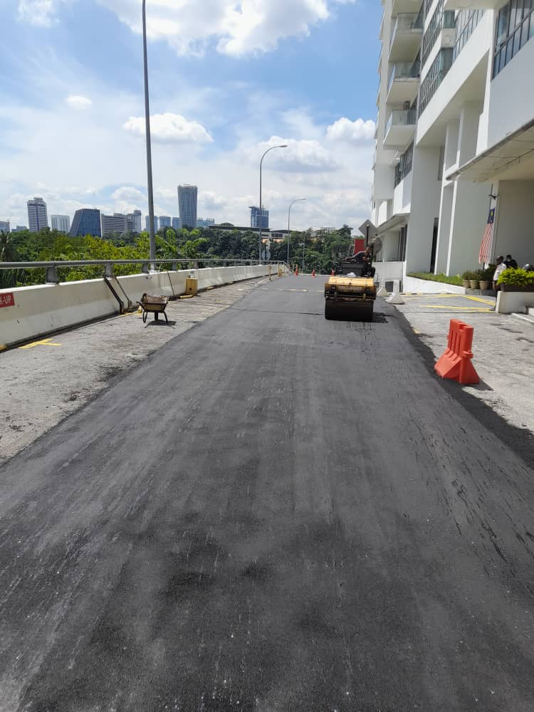
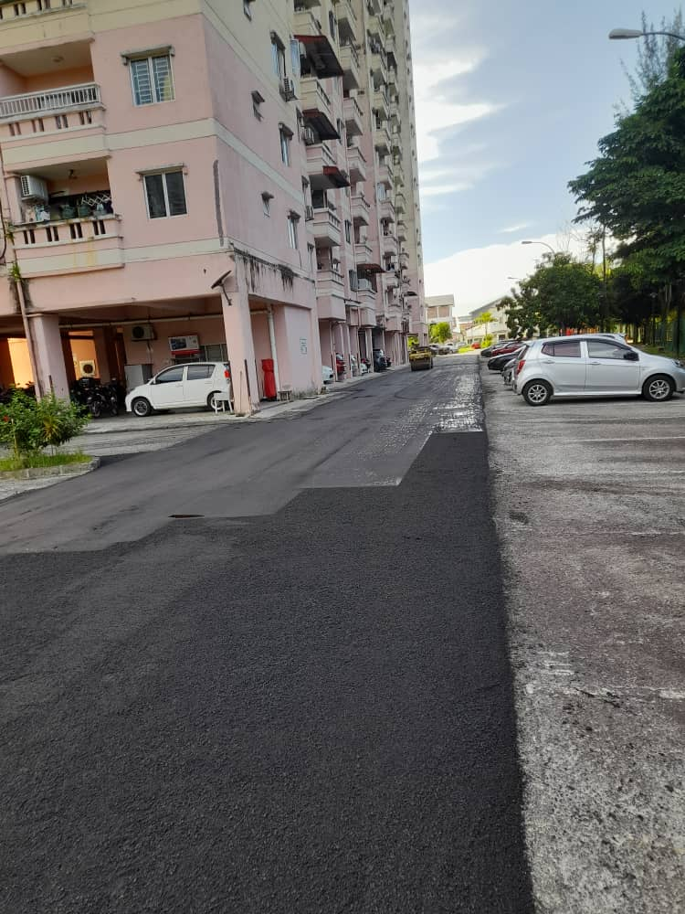
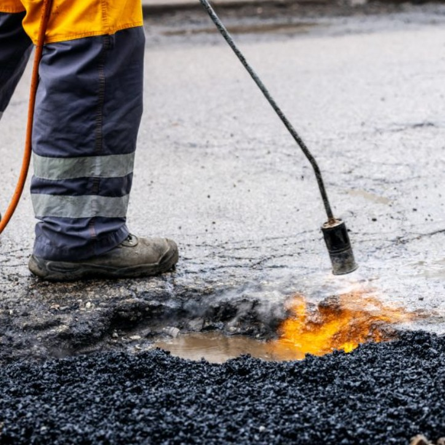
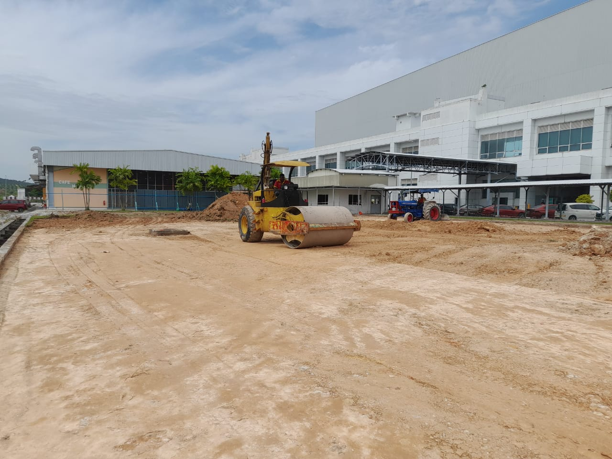

Our Roadworks Services
View our recent work across Klang Valley, Johor Bahru, Penang, and other regions in Malaysia. We handle projects of all sizes – from private driveways to municipal resurfacing jobs.

Tar Jalan & Road Resurfacing
Professional tar application and road resurfacing services for durable, weather-resistant surfaces that stand the test of time.

Premix Road Construction
Complete premix road construction including base and wearing course installation using high-quality materials and modern techniques.

Asphalt and Bitumen Paving
Expert asphalt and bitumen paving services for highways, residential areas, and commercial properties with guaranteed quality.

Driveway and Car Park Surfacing
Specialized driveway and car park surfacing solutions that enhance property value and provide smooth, durable surfaces.

Road Patching & Crack Repair
Quick and effective road patching and crack repair services to restore road integrity and prevent further damage.

Milling and Site Preparation
Professional milling services and comprehensive site preparation including drainage works and road bump installation.
Looking for long-lasting, weather-resistant road solutions?
Our experts are ready to help you with professional consultation and competitive pricing.
Contact Our Experts Today